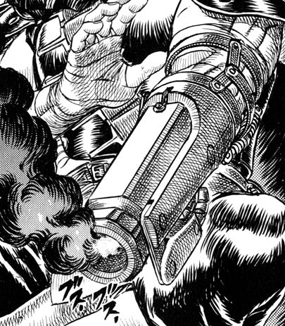

Abilities
Guts is a traumatized, parentless teenager with the body structure of a fully grown bodybuilder. He's found ny a group of mercenarys while doing his freelancer-hitman job and ends up becoming a official member of the "Band of The Hawk".
After leaving his band, Guts is now known as the "Black Swordsman" due to his immense sword, dark armor and terrible deeds. Travelling the world with nowhere to go, Guts in a constant internal struggle between pursuing his own ends and protecting those dear to him.
Guts's true nature is brought to life by the Berserker Armor. During the "Beast Mode", Guts is practically unable to speak, reason or think in other things besides killing. His strenght, speed and stamina are incredibly increased during the time he the armor's on the loose.

Swordsmanship and Physical Prowess
Guts has been a struggler of the battlefield since the raw age of nine, and as such, has had nearly two decades to refine himself into the formidable warrior he is. During his days as a mercenary in the Hundred-Year War, he became famed for slaying one hundred Tudor soldiers single-handedly, and even garnered the respect of the legendary swordsman Nosferatu Zodd for being the first human in three centuries to wound the apostle.
Following the Eclipse, his strength and reflexes improve drastically even still, honed to their peak in his constant struggle against fiends of the Interstice as one branded. Guts' combat prowess becomes so great as to rival the base forms of the most formidable apostles, allowing him to contend with them on equal footing. Donning the Berserker Armor, the Black Swordsman is able to transcend the natural limitations placed upon his body, and is capable of decisively overwhelming apostles even in their true forms.
Ever since he was six years of age, Guts has wielded oversized swords, culminating in his incredible strength and master swordsmanship. Despite his Herculean stature, Guts is notably dexterous and agile in the heat of battle, capable of dodging and countering even the most rapid strikes. He is a combat pragmatist and versatile improviser, capitalizing on any opportunity available to surmount opposition; on several occasions, he has used children to bait and distract enemies when overwhelmed. Even combatants known for their keen combat intellect, such as Silat and Serpico, have fallen prey to Guts' adaptive capacity and combative wit.
Guts possesses an indomitable will which enables him to persevere in the face of seemingly insurmountable obstacles. His force of will is so great that he has unconcernedly mutilated his own body in pursuit of his goals, and let himself be injured in order to create openings and execute counterattacks on opponents. It is specifically his personal determination that pushes him forward in the face of opposition as one branded, and that which factors greatly into the retainment of his humanity.
Leaping Fish

Though much of his survival is predicated on his sheer determination and willpower, Guts' life has been littered with instances where his survival was largely coincidental. For an unspecified amount of time, he is left to die beneath the corpse of his hanging mother, yet he still releases a healthy cry upon randomly being discovered by Gambino and his mercenaries at a later point. The Skull Knight notes that Guts "began [his] life from death", and as such possesses a flair for escaping it. Such instances include, but are not limited to:
During one of Gambino's mercenary operations, Guts is the only survivor of a decoy charge, where his fellow mercenaries are all killed by a volley of arrows. After being shot off a cliff by Gambino's mercenaries, he survives the high fall, fends off an attack from a pack of wolves and is by chance taken in by another mercenary band. During his hostage taking of a noble's son, he reaches out for Chitch's unclasped flower, resulting in the archer behind him missing a shot aimed at the mercenary's back and instead hitting the noble's son. In his duel with Bazuso, his survival is heavily dependent on Bazuso's ax cracking before it can cleave his head. During an unspecified time between his meeting the Falcons and reappearing as the Raiders Captain three years later, he was involved in a battle with an army of soldiers and was the sole survivor of the conflict, leading Griffith to marvel at his "luck of the devil".
Inducing submission into others has become an effortless task for him; even highly revered individuals collapse to their knees upon their first encounter with him. Most telling of his newfound influence is the alliance he has formed between demonkind and humanity, leading both the sinful black and blind white sheep, in accordance with the prophecy of the Holy See's scriptures.
""He is still alive. He contested with fate... survived it."
– Flora regarding Guts
Equipment
Dragon Slayer
Having been made with the "ultimate steel", Guts uses this enormous sword to easily cleave through humans and demonkind with ease. In conjunction with the Berserker Armor, the cutting power of the Dragon Slayer increases significantly. During the Berserker's bout with Grunbeld, Guts is able to shatter the knight's cannon fire-deflecting shield and the corundum skin of the apostle's true form.
The Dragon Slayer has been tempered by the malice of the innumerable demons slain in Guts' journey, and is capable of dealing extensive damage to astral and physical beings alike. It also has defensive uses, broad enough to act as a shield from arrows and bolts, and capable of diverting lightning into the ground as a lightning rod. Guts also uses it to mitigate blows by holding the sword level with his body and letting it absorb the brunt of impact.
Cannon Arm
The cannon in Guts' mechanical arm is one of Rickert's inventions, given to him for his hunt on demonkind. It has been of invaluable use to the swordsman, having saved him from peril many times in his journey. The cannon has a highly effective blast radius, capable of tearing into even the most sizable of monsters and apostles. When unable to use his right arm, Guts instead uses his teeth to pull the cannon's ignition cord, often fooling enemies into believing he has been outdone before blasting into them. He has also used the velocity produced by the cannon's recoil to blast into one target and perform a reversing slash into another with the Dragon Slayer, effectively eliminating two enemies in a single motion.
Berserker Armor
Gifted to him by Flora, the Berserker Armor acts as the Black Swordsman's last resort against overbearingly powerful enemies. It allows him to fight with superhuman agility and ferocity, granting him the capacity for annihilating swarms of mammoth monsters and even decisively defeating apostles in their true forms. The drawbacks of the armor outweigh its advantages, however; with the overriding of his pain receptors, Guts is at constant risk of losing bodily functions and even his life.
Additionally, when a debilitating injury, such as a broken bone, is received, the armor extends metal spikes deep into the user's flesh, forcibly reconstructing the impairment while causing significant blood loss in doing so.
Projectiles
The Repeater Crossbow is another weapon Guts receives before setting out on his war against demonkind. He uses the crossbow by attaching it to his mechanical arm and filling its magazine full of bolts, releasing a volley of bolts upon turning its crank. The Repeater Crossbow is wielded extensively up until Guts' acquisition of the Berserker Armor, at which point its use is seemingly deferred.
Having been taught the basics of knife throwing by Judeau, Guts has acquired remarkable accuracy and precision with them over the years. Their greatest use is dependent on vital points being hit, being of minimal effect against larger foes; against smaller targets, however, they are quite lethal.
Miniature bombs are a later addition to Guts' arsenal. These small, mine-shaped bombs are remarkably powerful for their size, but within a very contained radius, usually only killing targets if vital areas are hit. As such, they are typically used only to slow down or distract larger enemies. Guts has given these bombs to Isidro for the foreseeable future.